Exploring the Power of
Pretrained Flow Models
Exploring how AI turns random noise into images, and how we can guide and creatively combine images in unexpected ways.
Visualizing Training and Sampling
Unlike traditional diffusion models, which typically work backward from noise toward a clean image,
flow matching learns a continuous path that transforms random noise at t = 0 into a
clean image at t = 1. In optimal transport (OT) flow matching, this path is a
straight-line interpolation between noise and the original image. The model learns to predict the
direction and speed of movement along this path, known as the velocity, so it can gradually transform
noise into an image.
1.1 Constructing Noisy Training Inputs
To get a better feel for how this process works, I experimented with my own test image. Using a
single sample of Gaussian noise, I generated intermediate states at t = 0.25, 0.50, and 0.75.
Comparing these snapshots helped me visualize how the image evolves along its trajectory, with
the image content becoming clearer and the noise fading as t approaches 1.
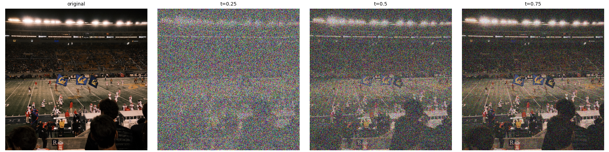
1.2 Classical Denoising Baseline (Gaussian Blur)
Before relying on a trained model, I also explored a simple, non-AI approach to denoising.
I first rescaled the noisy image by dividing its pixel values by t, then
applied Gaussian blur to smooth out the remaining noise. I tested different blur strengths,
with sigma = 1,2,4,8,16 and compared each result against the original image
using mean squared error (MSE). This gave me a straightforward baseline for seeing how well
a traditional image processing technique could recover the original image.
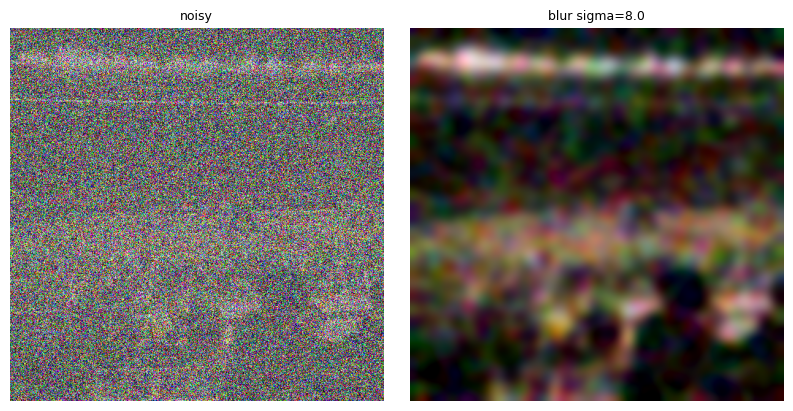
Best blur at t = 0.25 (high σ removes noise but completely erases structure)
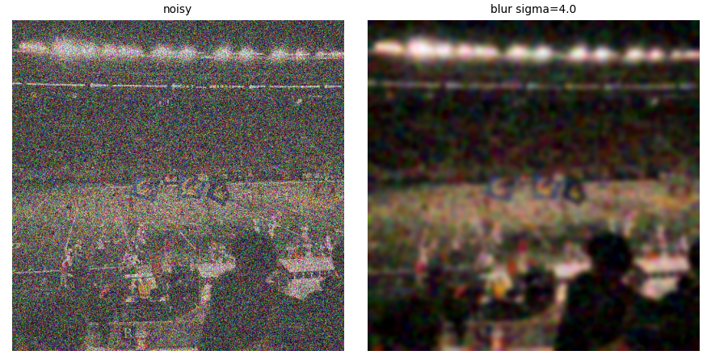
Best blur at t = 0.50 (blurry details)
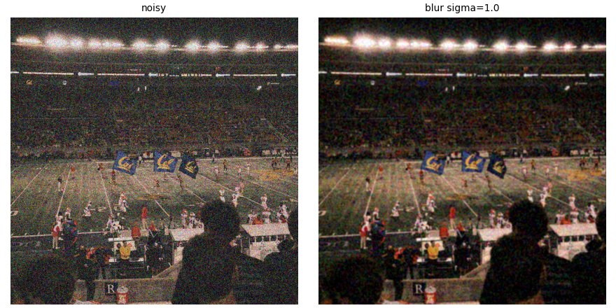
Best blur at t = 0.75 (retains coarse shapes)
1.3 One-Step Denoising with Flow Predictions
Using PixNerd-XXL, I explored how a pretrained flow model could recover a clean image
in a single step. Given a noisy image, the model predicts the velocity
vθ(xt, t, c), guided by the prompt “a high
quality photo”. I used this predicted velocity to project directly to the clean endpoint,
allowing me to see how well the model could reconstruct the image in one shot.
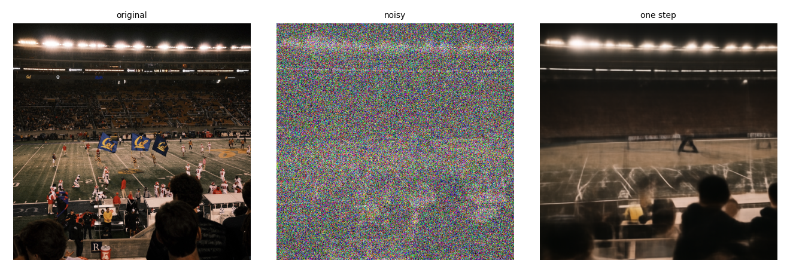
One-step estimate at t = 0.25
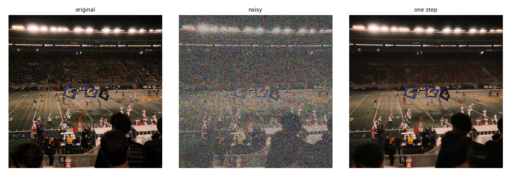
One-step estimate at t = 0.50
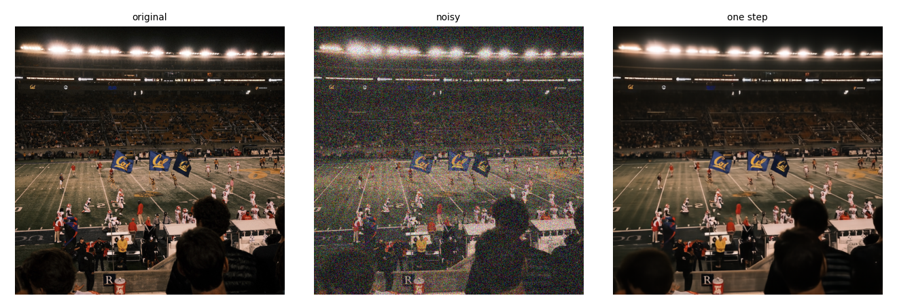
One-step estimate at t = 0.75
1.4 Visualizing Velocity & Error Heatmaps
To better understand how accurately the model predicts the path back to a clean image,
I compared its predicted step, (1 - t)v̂t, against the ground-truth
step, (1 - t)vgt = x1 - xt. I then visualized
the per-pixel root mean square (RMS) error as a heatmap to highlight where the predictions
differed most from the ground truth. The results revealed larger errors around fine textures
and sharp edges, suggesting that these high-frequency details are harder for the model to
reconstruct accurately in a single step.

Original image
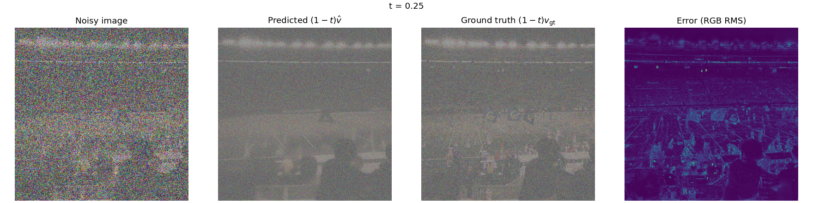
Velocity breakdown at t = 0.25
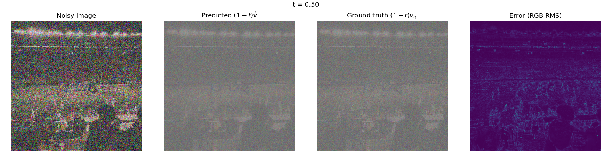
Velocity breakdown at t = 0.50
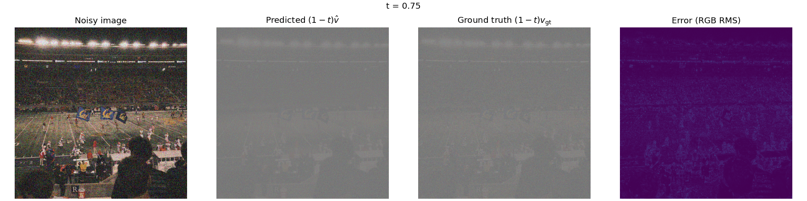
Velocity breakdown at t = 0.75
1.5 Iterative Denoising with Euler Integration
A single, large step can miss the mark, especially when starting from heavily corrupted images.
This is because the path from noise to a clean image can curve through high-dimensional space,
making it difficult to capture the entire journey with one straight line prediction. Instead,
Euler integration takes smaller steps along the trajectory, recalculating the model’s predicted
velocity at each point. With a step size of h = 0.02, I started at t = 0.50
and took 25 steps to reach t = 1.00, allowing the image to evolve gradually toward
its clean endpoint.
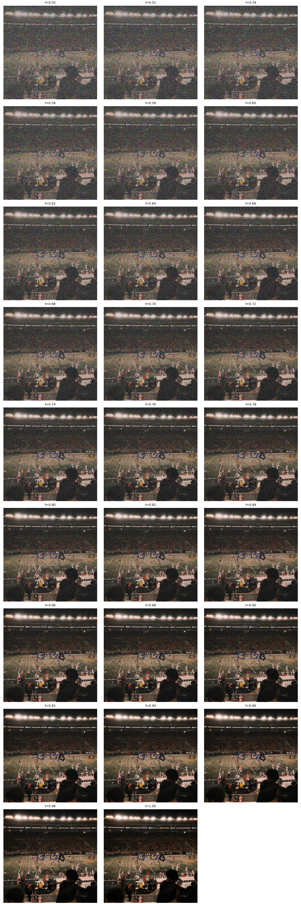
Trajectory from t = 0.50 to t = 1.00 shown every 5 updates.
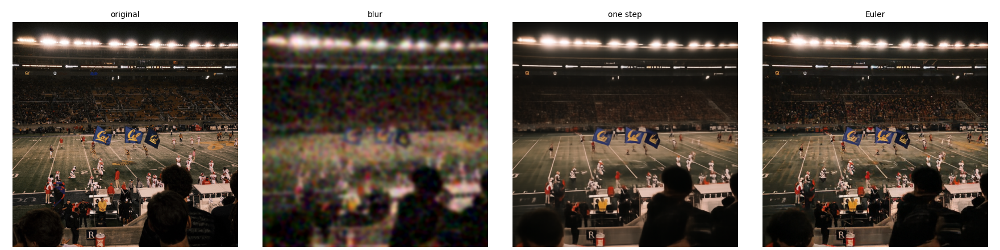
Comparison on the same t = 0.50 input: Original vs Gaussian Blur vs One-step vs Euler Denoising.
What I learned!
This experiment helped me understand the trade-offs between different approaches to image denoising. Classical filtering, such as Gaussian blur, removes noise by smoothing out high-frequency information, but this also means losing fine details and sharp edges. One-step flow prediction goes a step further. Rather than simply smoothing pixels, it can generate more coherent visual structures, although a single jump may struggle to follow a curved trajectory accurately. Euler sampling addresses this limitation by breaking the journey into smaller steps, repeatedly following the model’s predicted velocity field to guide the image toward its final form.
1.6 Generating Images from Noise
I generated five images from independent random noise samples using the prompt “a high quality photo”, tracking each seed and applying 50 Euler steps to transform the noise into a coherent image.

Conditional Generation and Guidance
Can a model turn pure random noise (t = 0.0) into a realistic image? To find out,
I ran Euler sampling over 50 steps, gradually transforming random noise into an image.
However, standard sampling often produced blurry or ambiguous faces, showing that generating an
image is not just about removing noise, but also about how well the model follows the intended
prompt. This led us to explore Classifier-Free Guidance (CFG), a technique that strengthens
prompt adherence by combining predictions made with and without text conditioning.
2.1 Classifier-Free Guidance (CFG) Comparisons
To see how much guidance changes the results, I used the same five initial noise seeds to generate images under two settings: unguided sampling (w = 0) and guided sampling (w = 7.0), both with the prompt “a high quality photo”. Keeping the starting noise fixed made it easier to compare the effect of CFG. With stronger guidance, the generated images generally showed sharper contrasts, more distinct features and more vivid lighting, bringing details into focus that were less apparent in the unguided results.

The Trade-off with Guidance
I found it helpful to think of CFG as turning up the intensity of the model’s response to a prompt. By steering generation away from the unconditional prediction and toward the text-conditioned one, CFG encourages the model to produce images that align more closely with the prompt. The trade-off is that stronger guidance can reduce variety and lead to more pronounced visual features, sometimes at the expense of natural looking results. In other words, guidance can make an image sharper and more faithful to the prompt, but pushing it too far may limit the diversity of what the model produces.
Creative Applications
By guiding the model’s predicted velocity during Euler sampling, I explored how flow matching can do more than generate images from scratch. I experimented with image editing, turning rough sketches into realistic images, creating images that look different when rotated 180°, and blending images at different spatial frequencies.
3.1 Image-to-Image Editing (SDEdit)
To explore image editing, I added noise to an existing image at different starting times,
tstart ∈ [0.02, 0.04, 0.06, 0.10, 0.14, 0.25, 0.50] , then
used Euler sampling to denoise it back to t = 1.0. This allows the model to
reconstruct the image while introducing changes based on what it has learned about natural
images. The starting time controls how much the result can change: lower values preserve
more of the original image, while higher values introduce more noise and give the model
greater freedom to generate new details.

Campanile sweep across starting times: at t=0.02, it hallucinates a generic structure; by t=0.25, the clock tower returns.
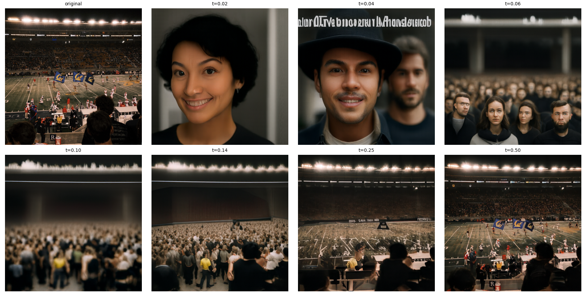
Test Image 1 manifold projection
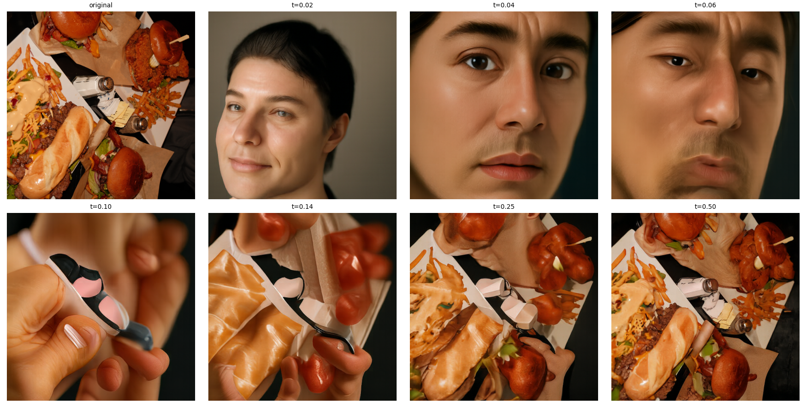
Test Image 2 manifold projection
Editing Web & Hand-Drawn Images
Rough sketches and simple drawings often lack the textures, shading and details found in photographs. I explored how SDEdit could bridge this gap by using the sketch’s basic shapes and structure as a guide, while allowing the flow model to fill in realistic textures, lighting and other visual details.
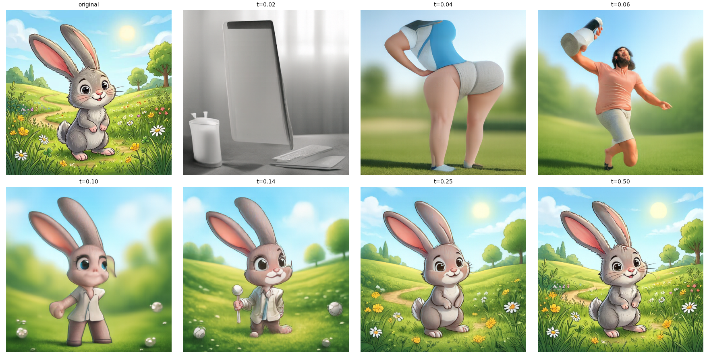
Web image projection
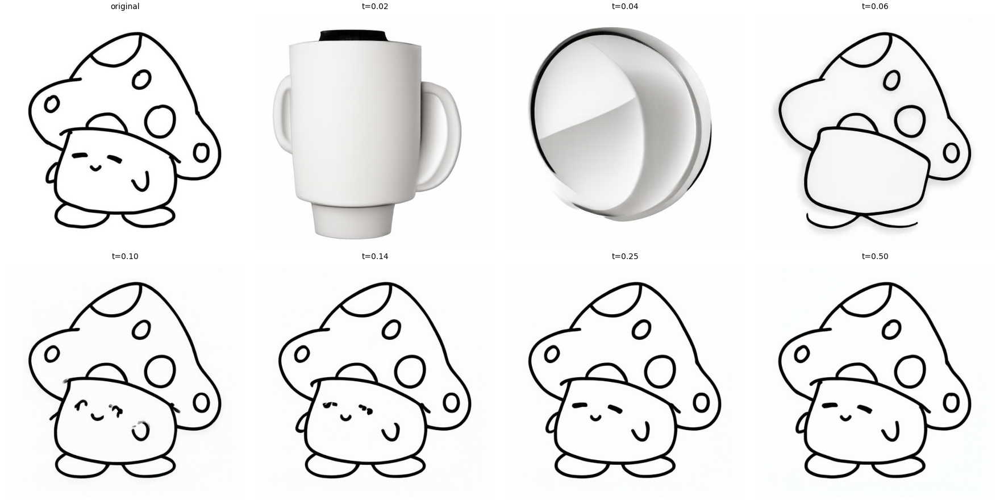
Hand drawing 1: turning flat mushroom into shaded 3D cup
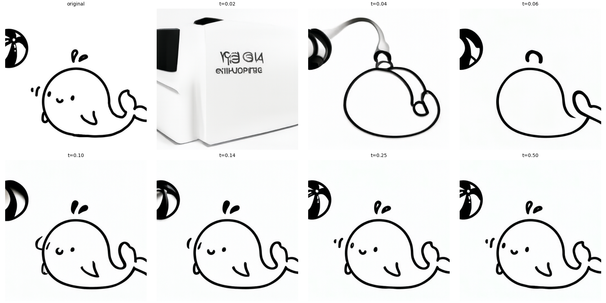
Hand drawing 2: turning flat whale into shaded 3D unknown object
3.2 Text-Guided Image Editing
Instead of guiding the model toward a generic photo, I provided a more specific prompt to shape how it reconstructed the noisy image. This allowed me to investigate how text guidance can change an image’s appearance while retaining elements of its original structure.
Campanile → Corn Dog
"a photograph of a korean corn dog"
Football Field → Mahjong Table
"a photograph of a mahjong table"
Burgers → Fireplace
"a photograph of a fireplace"
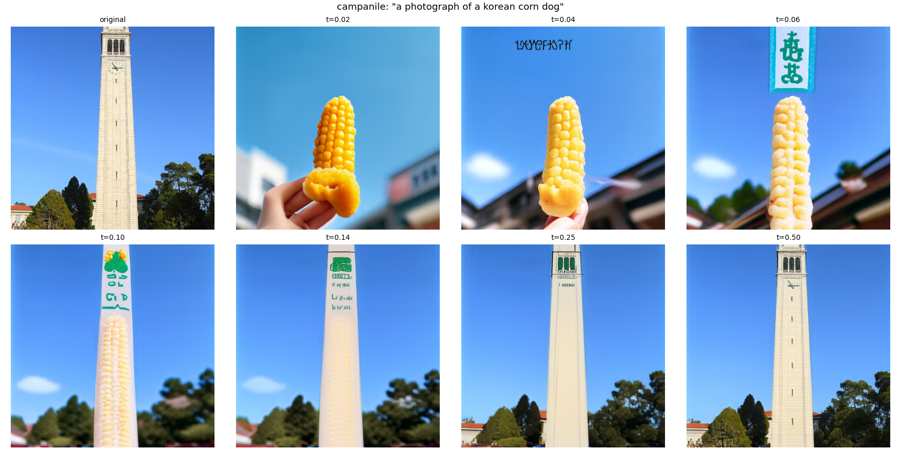
Text-guided editing: at t=0.10, the Campanile retains its vertical framing while its surface transforms into a corn.
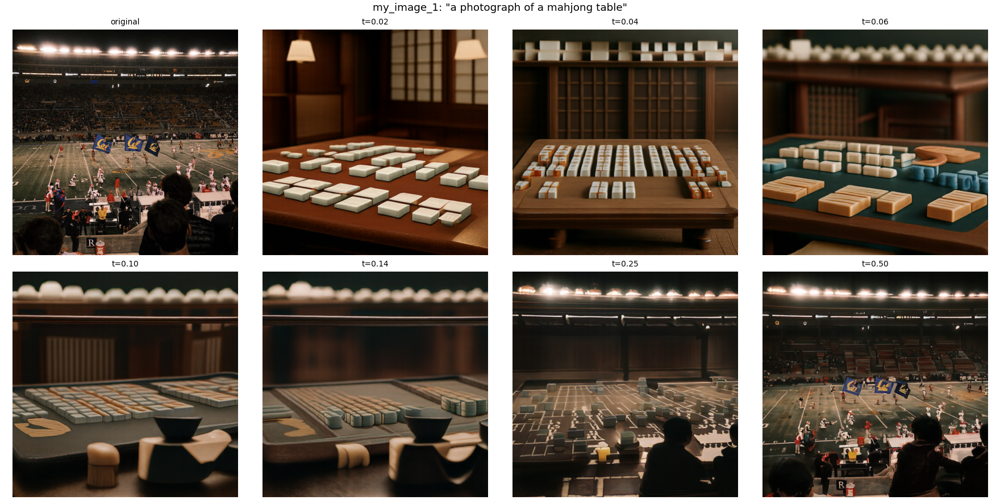
Text-guided editing: at t=0.06 - 0.25, the field retains its flat plane while its surface transforms into a Mahjong table.
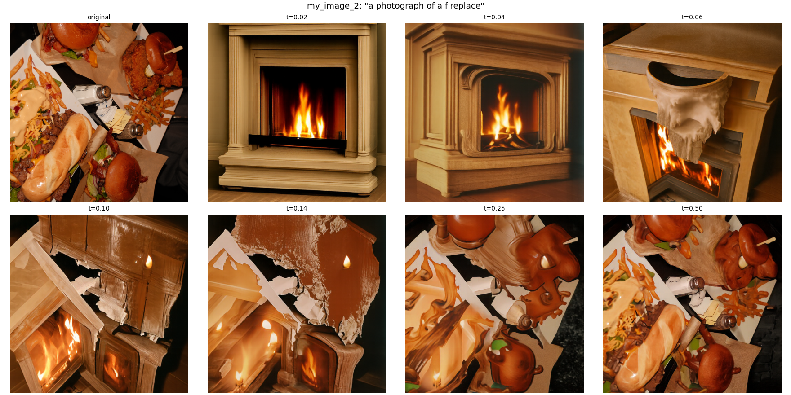
Text-guided editing: at t=0.10 - 0.25, the Burger retains its overall layout while its surface catches on fire.
3.3 Visual Anagrams (Optical Illusions)
How can one image tell two completely different stories depending on how you look at it? By decomposing each Euler step, I can guide the model to generate an image that reveals one scene when upright and another when rotated 180°.
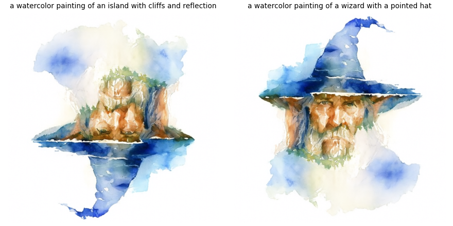
Anagram 1:
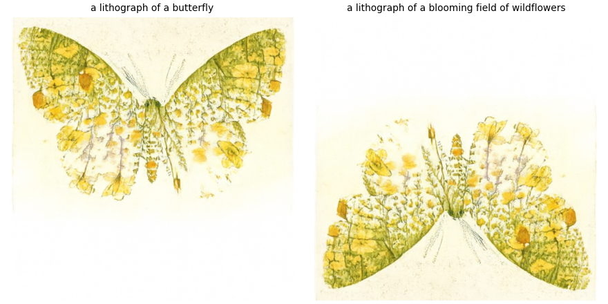
Anagram 2
3.4 Hybrid Images (Frequency Decomposition)
Building on the hybrid images from Project 2, I adapted the same idea to flow matching. At every Euler step, I split the velocity fields into low and high spatial frequencies using a large Gaussian blur (σ = 16, kernel size = 265). The result combines two perspectives: Prompt A shapes the overall silhouette, visible from afar, while Prompt B controls the finer details that emerge up close.
Near View: A lithograph of dense bamboo stalks and leaves (High Frequencies)
Distant View:
A lithograph of a giant panda face (Low Frequencies)
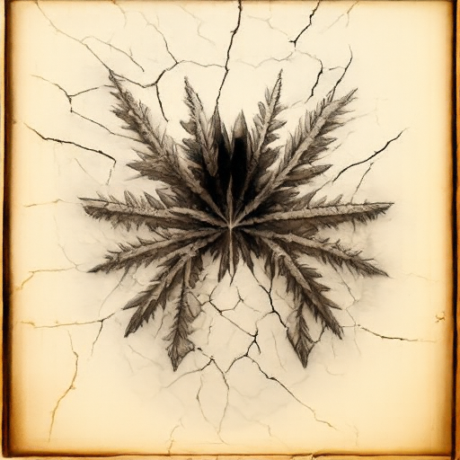
Near View (Full Size): A lithograph of frost crystals and cracked ice patterns on a window (High Frequencies)
Distant View
A lithograph of a spider sitting in the center of a web (Low Frequencies)
Final Takeaway
Visual anagrams and hybrid images show just how flexible vector fields can be. Since each velocity prediction is essentially a set of numerical operations on pixels, I can rotate it, filter its spatial frequencies, or blend predictions from different prompts. The model then follows these modified paths to generate images that can convey two seemingly contradictory interpretations at once. What I found particularly interesting is that creating these effects doesn’t require changing the model itself, but just changing how its predictions are combined.